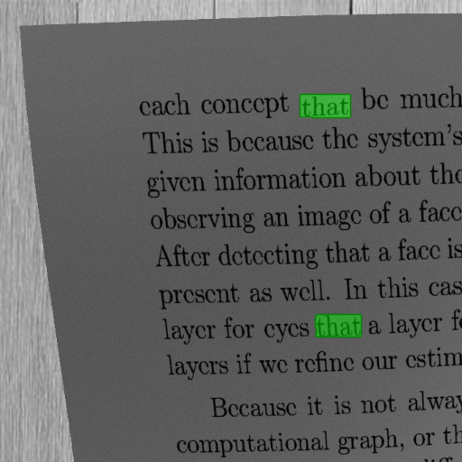
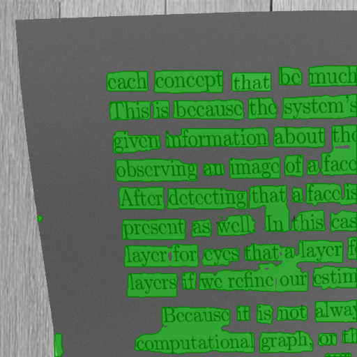
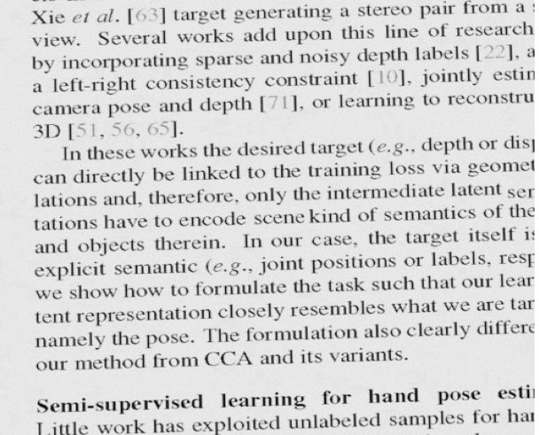

Copy–move
From another field on the same page
British Machine Vision Conference · 2026
JPEG-Induced Structural Bias in
Document Tampering Detection

Document forgery localization
A detector has to mark the altered pixels.

From another field on the same page
From a separate document
From a newly rendered patch
Schematic examples
Existing methods · DocTamper example
Small changes to a receipt’s date and time


Forged Authentic
What clues make this possible?
Published overlays · Wong et al., ICCV 2025, supplementary Fig. B (first Test example)
Scope of this study
Used to store and share camera images.
Also an output format for mobile document scanners.
Six detectors combining RGB and DCT features
Sources: JPEG Committee · Google ML Kit document scanner · BMVC experimental setup
JPEG compression

JPEG transforms and quantizes each block independently.
When a previously compressed patch is pasted
GAF Align the edit
PRC Shift the grid
Six detectors on DocTamper
Test 1 · Align the edit
Each cell is 8 × 8 pixels.
Expand source and target to the enclosing block boundaries.
Watch the source grid travel with the replacement text.
Matched in both branches Selected text, forgery operation and JPEG schedule.
Copy–move schematic · The same boundary alignment applies to splicing and rendered text.
Grid-Aligned Forgery · BMVC Figure 1(a)

Grid-aligned edits Standard edits
Flagged pixels
Aligned editMissed in the dashed box
Standard edit“one-line” is detected
DocTamper TestingSet · Copy–move · Pixel F1
Paired unaligned edit Aligned edit
8.6–47.0 percentage-point loss
Also on Tampered-SROIE receipts:
all six detectors lose F1
Test 2 · Keep the existing edit


No new forgery is added. Green marks the detector’s output.
Test 2 · Shift the grid
JPEG encoding origin
Schematic grid · The original forgery and JPEG schedule are matched across both branches.
Pad–Recompress–Crop · DocTamper TestingSet

0.1–21.5%
Range of mean false-positive share of full image area after PRC
DocTamper TestingSet · Pixel F1
Original forgery, recompressed Shifted grid
5 / 6 detectors lose F1
One improves on this split.
The response depends on the detector.
Test for missed edits and false alarms when the JPEG grid changes.
Nauman Riaz · nauman.riaz@dfki.de
Test for missed edits and false alarms when the JPEG grid changes.